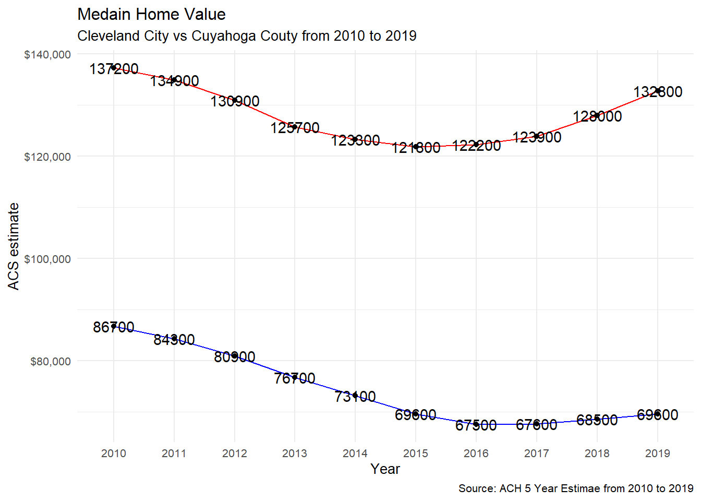
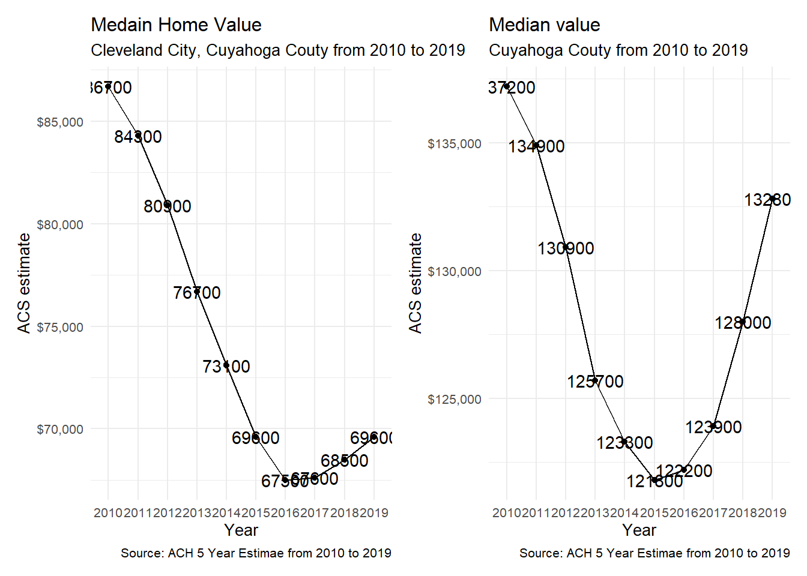
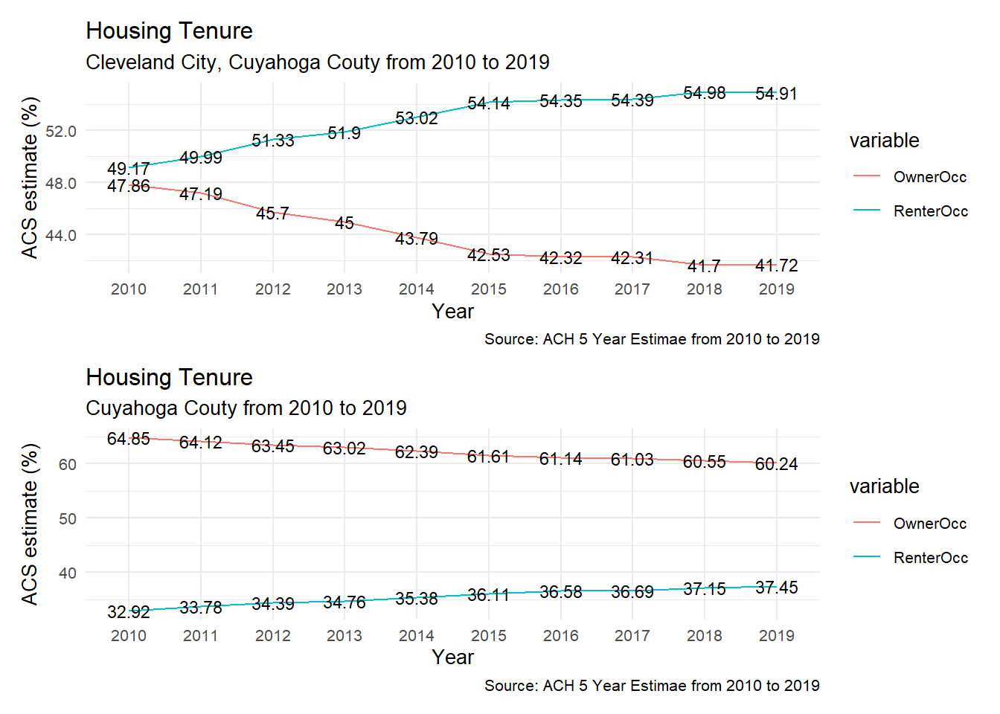
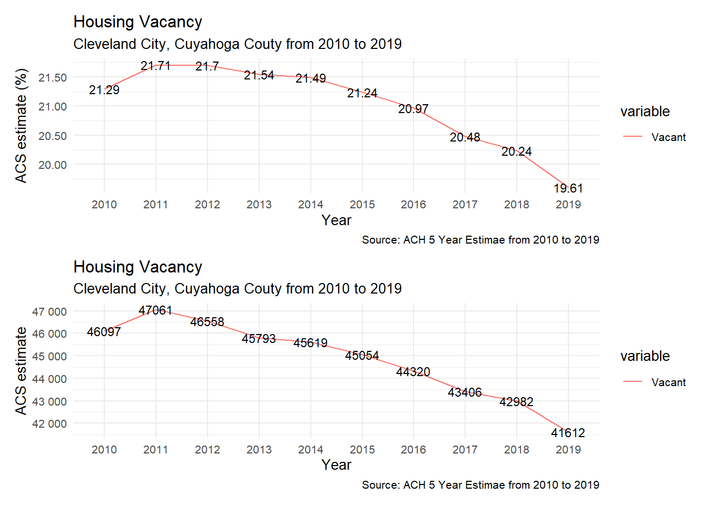
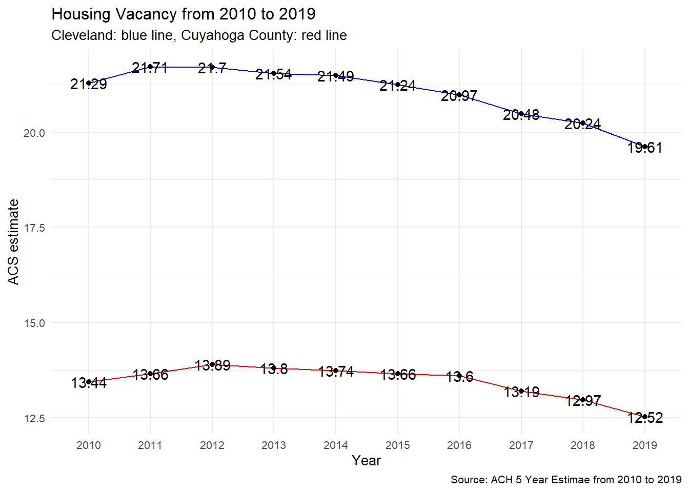

The Median Age of Housing stocks in the City of Cleveland is 1940. This number is the oldest in all Cuyahoga County. This represents Cleveland holds old housing stocks compared to other suburban cities.
The median home value of Cleveland city has been recovered from 2016 and restored to a similar level in 2014. Relatively, the median home value of Cuyahoga County has been recovered since 2015 and converted to an equivalent price in 2012. The ten years of median home value dynamic shows the Cleveland housing market is still a lower segment in Cuyahoga County. Also, the recovery level of Cleveland city is still lower than the County.


Median home value at Census Tract level shows that lower median home value census tracts have been concentrated in the City of Cleveland. This lower range of home value will not motivate residents to upgrade their house or new construction since they cannot expect the return of their investment. This logical behavior will make this area less invested than any other area in Cuyahoga County.
The owner-occupancy rate in Cleveland decreased by 5.33% from 2010 to 2015, and the pace has been steady since 2015. The renter occupancy rate has been increased by 4.97% since 2010, and the rate has been slowed from 2015. In 2019, the Homeowner occupancy rate in the City of Cleveland was 41.72%, and the renter occupancy rate was 54.91%.

The vacancy rate of Cleveland has reached the pick in 2011 and has been decreased by 2.1% from 2011 to 2019. in 2019, the vacancy rate was 19.61%, and the total number of housing was 41,612. However, Cleveland’s vacancy rate is higher than that of Cuyahoga Couty.

